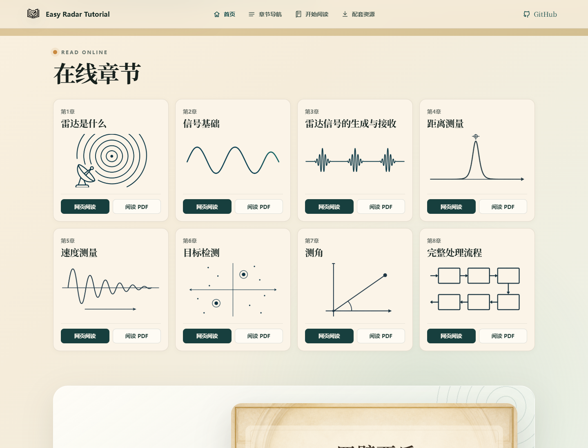
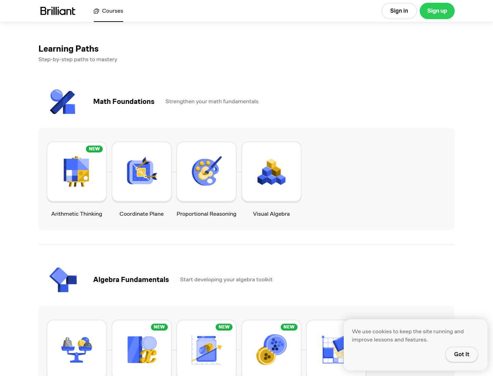
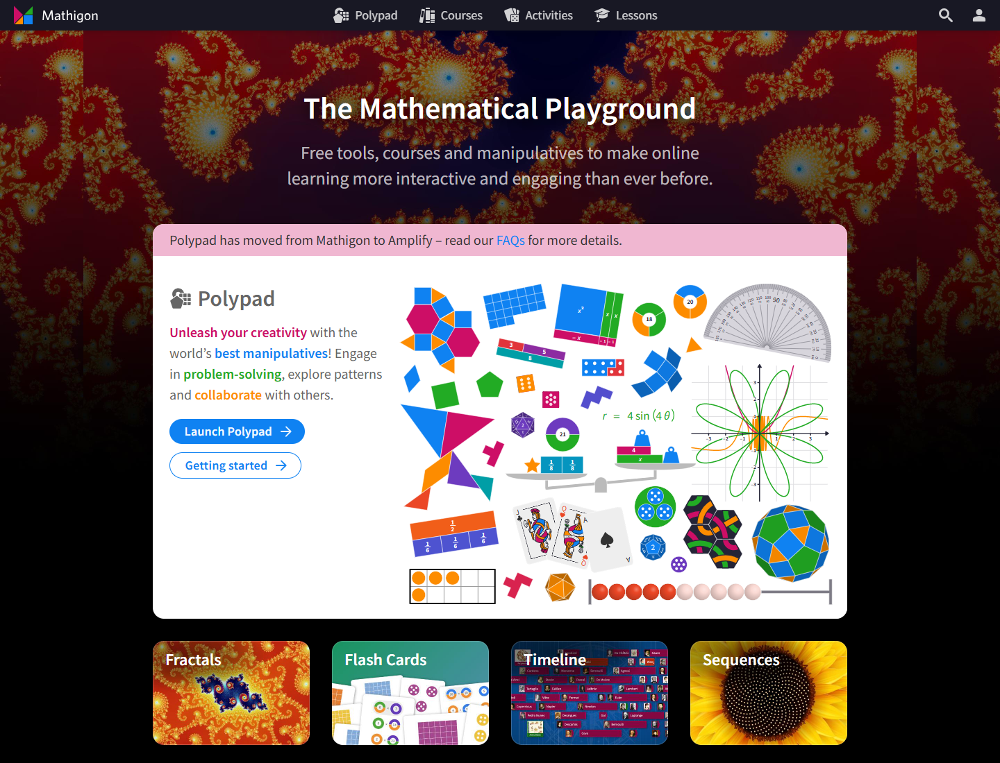
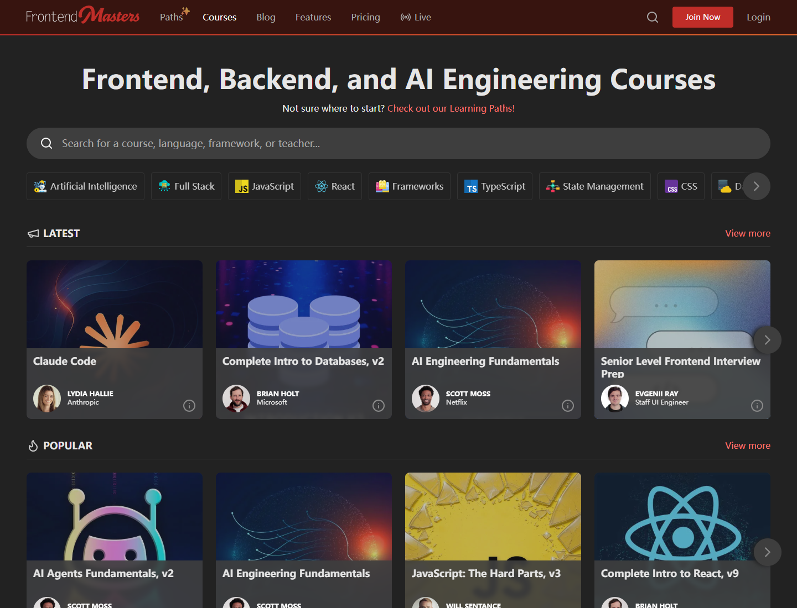
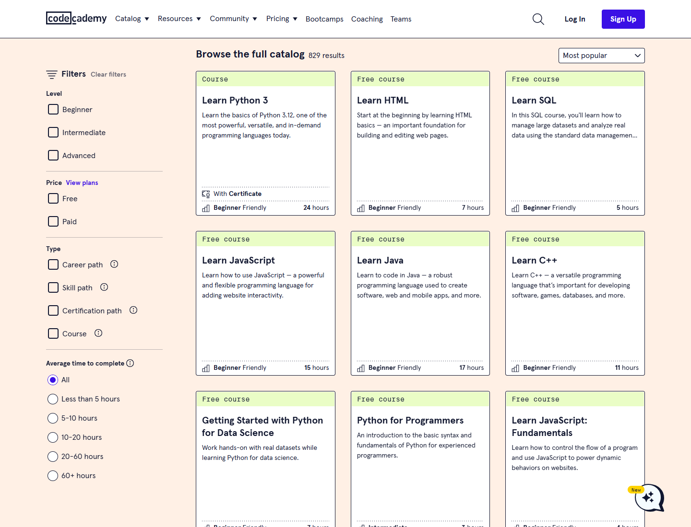
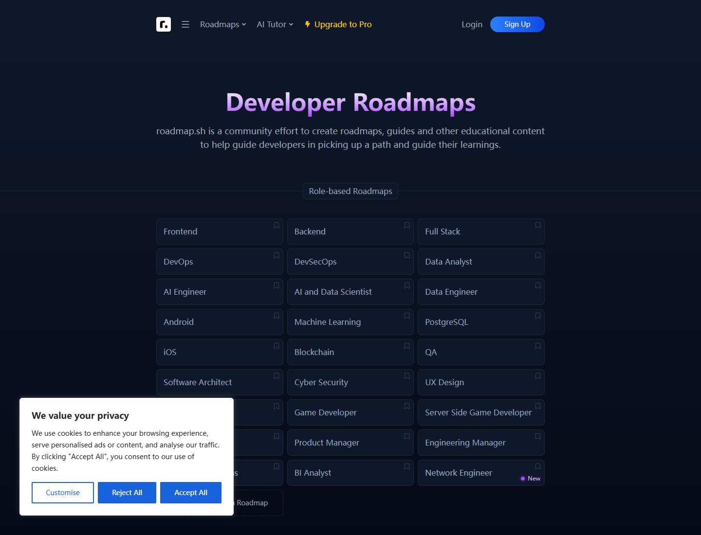

首页在线章节卡片参考
当前卡片已经干净统一，但太像静态目录。更适合雷达教程的方向：保留纸张质感和线稿，把 8 张卡组织成一条“雷达处理路径”，再给每张卡加学习收益和材料入口。
Current State

Three Card Directions
方案 A：学习路径卡片（最推荐）
把 8 张卡片变成“雷达处理链”，章节之间用细线、节点编号或背景轨迹连接。
目标/场景 ─ 信号基础 ─ 发射接收 ─ 距离 ─ 速度 ─ 检测 ─ 测角 ─ 全流程方案 B：大卡 + 小卡 Bento
把第1章或“开始阅读”做成大卡，其余章节做小卡，视觉冲击更强，但会牺牲现在的规整感。
方案 C：教材卡片 + 元信息条
每张卡增加一句学习收益，以及 `网页 / PDF / MATLAB / 互动工具` 等入口，卡片会更像课程模块。
第4章 距离测量
一眼看懂时间延迟如何变成距离
[峰值线稿]
2 个公式 · 1 个脚本 · 1 个互动
[网页阅读] [PDF]References





My Pick
- 采用“方案 A + 方案 C”：保留 4x2 网格和线稿风格。
- 在卡片上方加雷达处理链：目标/场景 -> 信号基础 -> 发射接收 -> 距离 -> 速度 -> 检测 -> 测角 -> 全流程。
- 每张卡加一句本章收益，例如“把时间延迟换算成目标距离”。
- 卡片底部加元信息：网页、PDF、脚本、互动；没有的项置灰。
- 给第4/5/6章加小标签：核心章节、有互动工具、工程常用。
Sources
Brilliant · Mathigon · Frontend Masters · Codecademy · roadmap.sh